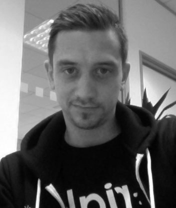

Joe Armstrong Co-Inventor of Erlang |  Bruce Tate Author of Seven Languages in Seven Weeks |  Robert Virding Co-Inventor of Erlang, Principal Language Expert @ Erlang Solutions |  Claes Wikström Creator of YAWS and Mnesia; Tail-f and Bluetail Co-founder |  Mike Williams Co-Inventor of Erlang |
 Roberto Aloi Creator of Erlang e-learning and tryerlang.org |  Jesper Louis Andersen Distribution Geek, Creator of the Erlang BitTorrent Client |  Stavros Aronis Hunter of Discrepancies in Erlang Code |  Thomas Arts Co-founder of QuviQ, ex-CS Lab |  Zvi Avraham Chief Founder Monkey @ ZADATA |
 Pavlo Baron Author of Erlang/OTP, Plattform für Massiv-Parallele und Fehlertolerante Systeme |  Chris Brown Research Fellow working on the ParaPhrase project and refactoring guru | Richard Carlsson Father of eunit, edoc and try-catch |  Benoît Chesneau Web Craftsman and CouchDB Committer |  Mats Cronqvist Über-Techie, Troubleshooting Guru and Senior Architect |
 Joe DeVivo Writes Code That Tests Riak |  Henning Diedrich Creator of Erlvolt, Maintainer of Emysql |  Frej Drejhammar The Brains behind the Erlang JIT |  Antony Falco |  Bryan Fink WebMachine and Riak Committer |
 Alex Gerdes QuickCheck expert and creator of Ask-Elle |  Kevin Hammond Professor in Computer Science | Torben Hoffmann Product and Research Manager for Erlang Solutions |  Loïc Hoguin Creator of the Cowboy WebSocket Framework, Spawnfest Co-Founder |  Sergey Ignatov IntelliJ Developer and Creator of Erlang Plugin for IDEA |
 Joel Jacobson Technical Evangelist at Basho |  Thomas Järvstrand Erlang hacker at Klarna since 2+ years |  Vassilis Karampinas Polyglot Programmer @ BugSense |  Zachary Kessin Erlang O'Reilly Author |  Omer Kilic Embedded Systems Engineer |
 David Klaftenegger Multicore Efficiency Aficionado |  Tamás Kozsik Programming Cyber-Physical Systems | Lukas Larsson JIT Problem solver |  Daniel Lee Core Code Grunt at Klarna |  Huiqing Li Inventor of Wrangler |
 Kenneth Lundin Head of the Erlang/OTP team at Ericsson |  Eric Merritt "Erlang and OTP in Action" Co-Author, ErlWare Maintainer |  Evan Miller Creator of Chicago Boss |  Jared Morrow Riak and RiakCS Committer |  Patrik Nyblom Erlang VM Developer and OTP Team Member |
Jan Henry Nyström Call me Henry |  Sebastian Ohm Technical Lead @ SoundCloud |  Mahesh Paolini-Subramanya VP of R&D @ Ubiquity Networks |  Enrique Paz Pérez Senior Backend Developer @ SpilGames |  Yurii Rashkovskii Entrepreneur, Spawnfest Organiser and Elixir Committer |
 Tony Rogvall Ex-CS Lab and Serial Entrepreneur |  Ali Sabil CTO @ Soundrop |  Kostis Sagonas Leader of the HiPE Team and Erlang Tool Developer |  Arjan Scherpenisse Zotonic Core Developer |  Berner Setterwall Campanjero |
Ram C Singh CEO of 10io. Thinker Schemer Solver Guy | Michal Slaski Head of the Erlang Solutions Kraków Office |  Andreas Stenius Member of the Zotonic core team |  Erik Stenman O'Reilly Author, Chief Scientist @ Klarna |  Peer Stritzinger Entrepreneur, Erlang Embedded and Automotive Expert |
 Hans Svensson QuickCheck expert who has visited the dark corners of Erlang | Simon Thompson Creator of Wrangler and Co-Author of "Erlang Programming" |  Melinda Toth Researcher at ELTE and Leader of the RefactorErl Project |  Torbjörn Törnkvist Former Member of CS Lab, Solutions Architect @ Tail-f |  Paul Valckenaers Let's Build an Operating System for the Real World |
 Steve Vinoski Distributed Systems Expert |  Ulf Wiger Feuerlabs co-founder and Developer Advocate |  Kjell Winblad Ph.D. Student @ Uppsala University |  Cons T Åhs Keeper of The Code |